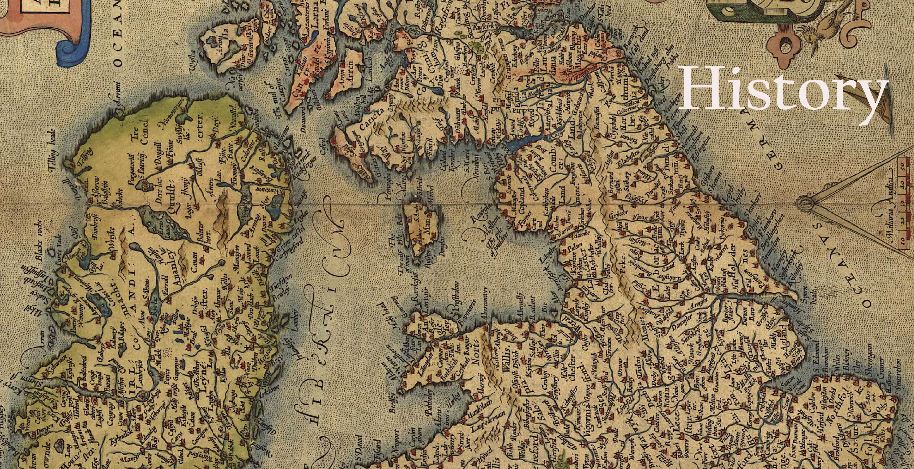
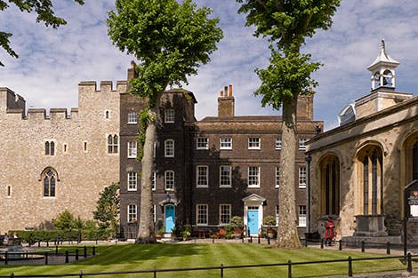
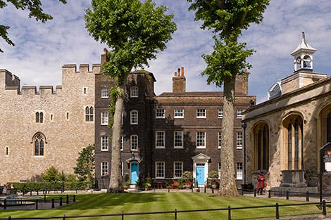
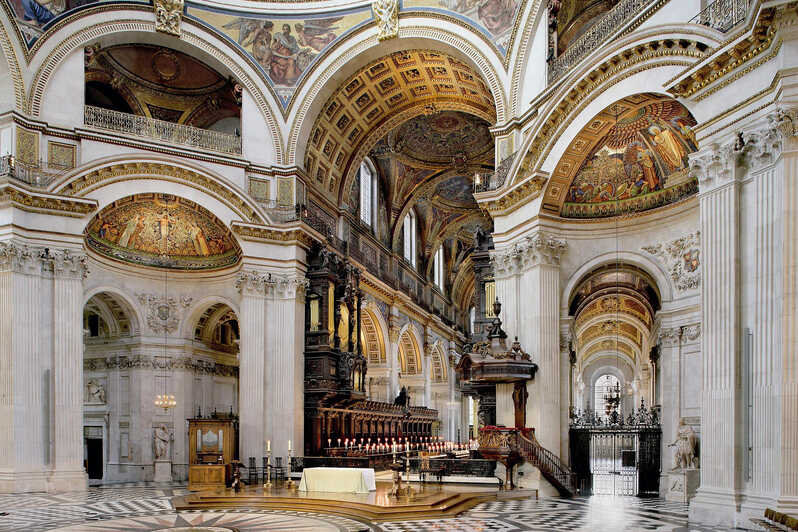

The islands that are today the United Kingdom were invaded by the Romans in 55 BC. This brought the local islanders into contact with the rest of Europe. After the Roman Empire weakened, the islands were invaded by the Saxons, the Vikings, and finally the Normans.The English conquered Wales in 1282 under Edward I. In order to make the Welsh happy, the king's son was made the Prince of Wales. The two countries became unified in 1536. Scotland became part of the British crown in 1602 when the king of Scotland became the King James I of England. The union became official in 1707. Ireland became a part of the union in 1801. However, many of the Irish rebelled and, in 1921, the southern part of Ireland was made a separate country and an Irish free state. In the 1500s Britain began to expand its empire into much of the world. After defeating the Spanish Armada in 1588, England became the world's dominant sea power. Britain first grew into the Far East and India and then to the Americas. In the early 1800s the UK defeated France in the Napoleonic Wars and became the supreme European power. In the 1900s, the United Kingdom became less of a dominant world power. It continued to lose control over colonies and was weakened by World War I. However, under the leadership of Winston Churchill, the United Kingdom was the last western European nation to oppose Germany in World War II and played a major role in defeating Hitler. The United Kingdom played a major role in the history of the world, taking a leading role in developing democracy and in advancing literature and science. At its peak in the 19th century, the British Empire covered over one-fourth of the surface of the earth.
So when was the UK established? Although some people argue that the UK was formed in 1707 by the Act of Union between England, Wales and Scotland, the name United Kingdom wasn’t adopted until 1801 when Ireland was brought into the union.

The United Kingdom (coloured in red) with the Republic of Ireland in grey.
Historical Places
Tower of London
 

Explore a historical place that has served as an impenetrable fortress, a notorious prison, and a magnificent palace. Tower of London is an impressive structure erected by William the Conqueror in 1086. Needless to say, one of England’s most popular tourist attractions, the Tower of London holds a wealth of intriguing history. Tower of London features the mesmerizing Crown Jewels, the infamous spot where two of Henry the VIII’s wives were executed, and so much more!
St Paul's Cathedral London


St Paul’s Cathedral is at the top of every tourist’s list of attractions to see in London. St Paul’s Cathedral is a notable sight boasting an astonishing cathedral floor, compelling crypt, three lavish galleries, and stellar 360-degree views of London from the top of the brilliant dome. Replete with ornate details inside and outside, St Paul’s Cathedral offers a wonderful peek at England’s outstanding historical beauty. You can even stand where Prince Charles and Lady Diana took their vows over 30 years ago.
Stonehenge England


Stonehenge is one of the most recognizable places on earth. A mindblowing pre-historic monument, Stonehenge is a masterstroke of engineering. Visit this historic site and you’ll learn about its mysteries and get a look at the way of life for the Neolithic people who built it. To this day, Stonehenge continues to fascinate and inspire us as we wonder how people thousands of years ago with only rudimentary tools and technologies could create such a spellbinding structure.
Caernarfon Castle, Wales
Located along the coast of north-west Wales, Caernarfon Castle is the top Welsh attraction in The United Kingdom. An imposing and grand structure that’ll make your jaw drop, this castle’s walls literally encompass the entire town of Caernarfon! Caernarfon Castle features a sturdy and majestic exterior with uniquely patterned stone walls, an intriguing hour-glass scheme, nine marvelous angular towers, and two secured gatehouses. If you’re a history buff or into architectural designs, then Caernarfon Castle is one tourist attraction you shouldn’t miss.
leeds castle kent
Enjoy a real gem of the English countryside when you explore Leeds Castle in Kent. A breathtaking medieval castle that even made King Henry the VIII swoon, Leeds Castle is built on islands with a surrounding moat. Situated on 500 acres (202.3 hectares) of well-maintained green parkland and beautiful gardens, Leeds Castle offers nearly 900 years of exciting English history. While visiting this site, you can also find out for yourself why Kent is called the “Garden of England”.